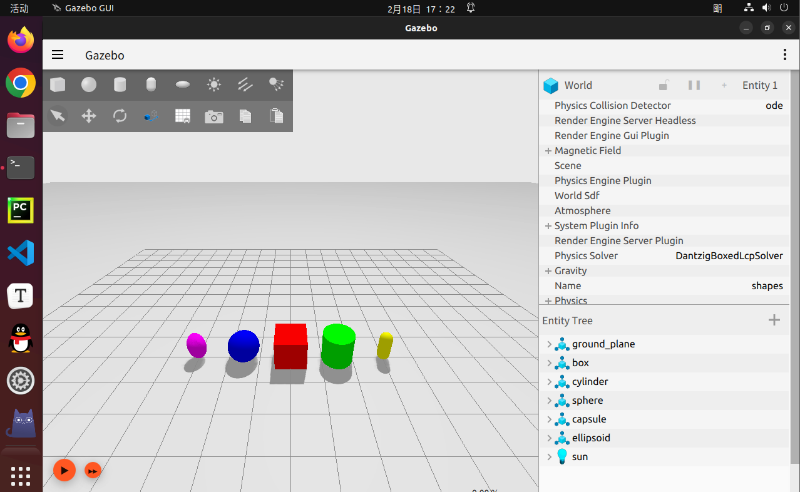

一些基本的配置
发现最近的一些课程以及项目中会用到Ubuntu，于是开始着手尝试配置
学习指南
| 学习阶段 |
学习内容 |
具体说明 |
| 第一阶段：仿真环境搭建基础 |
配置Ubuntu下的ROS、Gazebo、Rviz及必要程序环境 |
安装Ubuntu系统，在系统中安装ROS、Gazebo、Rviz等软件及相关依赖程序 |
|
以本课程机器人样机为基础模型，生成可用的urdf文件 |
学习机器人统一描述格式（URDF），基于课程给定的机器人样机模型，编写或生成对应的URDF文件，描述机器人的结构和运动学参数 |
| 第二阶段：仿真环境熟悉 |
熟悉ROS下机器人控制的编程机制 |
学习ROS的消息传递、服务调用等机制，了解如何在ROS框架下编写控制机器人的程序 |
|
熟悉机器人仿真和控制的程序框架 |
学习机器人仿真和控制程序的整体架构，包括各个模块的功能和交互方式 |
|
熟悉浮动基机器人模型构建方法并生成yaml文件 |
学习浮动基机器人的概念和建模方法，使用yaml文件格式记录相关参数 |
|
熟悉基于rqt的操控面板设置 |
了解rqt工具，设置机器人控制相关的操控面板，用于监控和操作机器人 |
|
熟悉Rviz的操作和使用 |
学习使用Rviz进行机器人模型可视化、传感器数据显示等操作 |
| 第三阶段：控制算法学习 |
学习例程的程序架构和单元模块 |
分析给定的机器人控制例程，理解其程序架构和各个单元模块的功能 |
|
学习yaml文件的解析方法 |
学习如何解析在机器人建模和控制中用到的yaml文件，提取其中的参数信息 |
|
学习机器人关节空间、任务空间的动力学建模方法 |
分别学习机器人在关节空间和任务空间的动力学建模理论和方法，建立机器人的动力学模型 |
|
学习多任务的规划和设置 |
学习如何对机器人的多个任务进行规划和设置，包括任务优先级、执行顺序等 |
|
学习基于任务优先级的整身控制方法（WBC）：伪逆、零空间 |
学习基于任务优先级的全身控制方法，理解伪逆和零空间的概念及在控制中的应用 |
|
观察和理解不同任务优先级下的机器人运动过程 |
通过实验和仿真，观察机器人在不同任务优先级设置下的运动情况，加深对控制方法的理解 |
|
学习控制与仿真交互方法 |
学习如何在仿真环境中实现控制程序与机器人模型的交互，验证控制算法的有效性 |
Ubuntu 22.04 配置 ROS2 Humble
由于我很早之前配置的是 Ubuntu 22.04 ，而其已经不支持ROS，只能配置新一代的ROS2，在 Ubuntu 22.04 下配置 ROS 通常指配置 ROS 2 的 Humble 版本。最开始时按照一篇教程进行配置，但发现问题：
| Bash |
|---|
| (base) wayne@wayne-virtual-machine:~$ sudo apt install ros-humble-desktop
正在读取软件包列表... 完成
正在分析软件包的依赖关系树... 完成
正在读取状态信息... 完成
E: 无法定位软件包 ros-humble-desktop
|
我先是怀疑网络连接的问题，于是执行：
| Bash |
|---|
| (base) wayne@wayne-virtual-machine:~$ ping packages.ros.org
PING ftp.osuosl.org (64.50.233.100) 56(84) bytes of data.
64 bytes from ftp-nyc.osuosl.org (64.50.233.100): icmp_seq=1 ttl=128 time=247 ms
64 bytes from ftp-nyc.osuosl.org (64.50.233.100): icmp_seq=2 ttl=128 time=244 ms
64 bytes from ftp-nyc.osuosl.org (64.50.233.100): icmp_seq=3 ttl=128 time=245 ms
64 bytes from ftp-nyc.osuosl.org (64.50.233.100): icmp_seq=4 ttl=128 time=245 ms
64 bytes from ftp-nyc.osuosl.org (64.50.233.100): icmp_seq=5 ttl=128 time=244 ms
...
|
输出显示连接良好，应该是之前的软件源配置不当，接下来重新配置
| Bash |
|---|
| # 设置语言环境
sudo apt update
sudo apt install locales
sudo locale-gen en_US en_US.UTF-8
sudo update-locale LC_ALL=en_US.UTF-8 LANG=en_US.UTF-8
export LANG=en_US.UTF-8
# 启用Universe仓库
apt-cache policy | grep universe
# 上一步没有输出相应行则执行下列命令
# sudo apt install software-properties-common
# sudo add-apt-repository universe
# 安装必要工具
sudo apt update && sudo apt install curl gnupg lsb-release
|
先执行cat /etc/apt/sources.list.d/ros2.list，ros2.list文件存储了 ROS 2 软件源的配置信息，但我出现了下列输出：
| Bash |
|---|
| (base) wayne@wayne-virtual-machine:~$ cat /etc/apt/sources.list.d/ros2.list
cat: /etc/apt/sources.list.d/ros2.list: 没有那个文件或目录
|
说明确实是之前的软件源配置错误，现在添加 ROS 2 GPG 密钥和软件源列表
| Bash |
|---|
| (base) wayne@wayne-virtual-machine:~$ sudo curl -sSL https://raw.githubusercontent.com/ros/rosdistro/master/ros.key -o /usr/share/keyrings/ros-archive-keyring.gpg
(base) wayne@wayne-virtual-machine:~$ echo "deb [arch=$(dpkg --print-architecture) signed-by=/usr/share/keyrings/ros-archive-keyring.gpg] http://packages.ros.org/ros2/ubuntu $(source /etc/os-release && echo $UBUNTU_CODENAME) main" | sudo tee /etc/apt/sources.list.d/ros2.list > /dev/null
(base) wayne@wayne-virtual-machine:~$ sudo apt update
命中:1 https://mirrors.tuna.tsinghua.edu.cn/ubuntu jammy InRelease
命中:2 https://mirrors.tuna.tsinghua.edu.cn/ubuntu jammy-updates InRelease
命中:3 https://mirrors.tuna.tsinghua.edu.cn/ubuntu jammy-backports InRelease
命中:5 https://dl.google.com/linux/chrome/deb stable InRelease
命中:6 http://security.ubuntu.com/ubuntu jammy-security InRelease
命中:4 https://packages.microsoft.com/repos/code stable InRelease
获取:7 http://packages.ros.org/ros2/ubuntu jammy InRelease [4,682 B]
获取:8 http://packages.ros.org/ros2/ubuntu jammy/main amd64 Packages [1,650 kB]
已下载 1,655 kB，耗时 2分 10秒 (12.7 kB/s)
正在读取软件包列表... 完成
正在分析软件包的依赖关系树... 完成
正在读取状态信息... 完成
有 147 个软件包可以升级。请执行 ‘apt list --upgradable’ 来查看它们。
|
之后执行sudo apt install ros-humble-desktop即可完成安装
| Bash |
|---|
| (base) wayne@wayne-virtual-machine:~$ sudo apt install ros-humble-desktop
正在读取软件包列表... 完成
正在分析软件包的依赖关系树... 完成
正在读取状态信息... 完成
将会同时安装下列软件：
...
|
等待片刻后即可，接下来进行测试：
Step 1：设置环境变量，执行echo $ROS_DISTRO，正常应当输出humble，但我此时输出为空，这是由于环境变量未添加到 ~/.bashrc 文件，执行下列步骤完成设置：
| Bash |
|---|
| # 加载 ROS 2 Humble 环境变量，使当前终端可直接使用 ROS 2 相关工具和功能。
source /opt/ros/humble/setup.bash
# 将加载 ROS 2 Humble 环境变量的命令添加到 .bashrc 文件，让新终端自动配置环境。
echo "source /opt/ros/humble/setup.bash" >> ~/.bashrc
# 重新加载 .bashrc 文件，让当前终端立即应用 ROS 2 环境变量配置。
source ~/.bashrc
|
Step 2：用诊断工具检查：ros2 doctor
Step 3：运行简单的节点通信测试：
| Bash |
|---|
| # 打开一个新终端，执行以下命令启动一个发布消息的节点
ros2 run demo_nodes_cpp talker
# 再打开一个新终端，执行以下命令启动一个接收消息的节点
ros2 run demo_nodes_py listener
# 打开一个新终端，执行以下命令查看当前系统中运行的节点
ros2 node list
# 查看当前系统中的话题
ros2 topic list
|
Step 4：还有一个有趣的小测试，用键盘控制海龟的移动
| Bash |
|---|
| sudo apt install ros-humble-turtlesim
# 启动海龟仿真器节点（执行后会弹出一个窗口，显示小海龟在画布上，说明节点启动成功）
ros2 run turtlesim turtlesim_node
# 再打开一个新终端，输入下列命令后可以用键盘方向键控制小海龟了
ros2 run turtlesim turtle_teleop_key
|
Ubuntu 22.04 配置 Gazebo
阅读官方文档了解到：
所以我选择配置Gazebo Fortress
| Bash |
|---|
| sudo apt-get update
sudo apt-get install lsb-release wget gnupg
# 官网最推荐的安装方式
sudo apt-get install ros-${ROS_DISTRO}-ros-gz
sudo apt install ros-humble-gazebo-ros-pkgs
# 测试
ign gazebo shapes.sdf
|
但在执行ign gazebo shapes.sdf时产生了一个warning，而且弹出的GUI有网格线闪动，没有预期的五个图形。解决方法如下：
Warning解决方法
| Bash |
|---|
| Warning: Ignoring XDG_SESSION_TYPE=wayland on Gnome. Use QT_QPA_PLATFORM=wayland to run on Wayland anyway.
|
Wayland 作为较新的显示协议，部分应用程序（包括 Gazebo）可能还存在兼容性问题，在登录ubuntu时，点击右下角的齿轮图标，选择 “Ubuntu on Xorg” 然后登录系统，也就是 在 Ubuntu 22.04 系统中从 Wayland 切换到 X11 显示协议，之后再次运行 ign gazebo shapes.sdf 命令就没有报错了。（不过这个warning不影响程序的正常运行）
渲染问题解决方法
| Bash |
|---|
| # 关闭GUI后看到下列输出提示
(base) wayne@wayne-virtual-machine:~$ ign gazebo shapes.sdf
context mismatch in svga_surface_destroy
context mismatch in svga_surface_destroy
context mismatch in svga_surface_destroy
|
查阅资料后发现是由硬件加速问题导致的，在虚拟机设置中关闭硬件加速即可
编辑虚拟机设置 --> 显示器 --> 加速3D图形（取消勾选）

Ubuntu 22.04 下配置 Rviz2
Rviz（ROS Visualization Tool）是 ROS（Robot Operating System）中一款强大的 3D 可视化工具。它允许用户以图形化的方式直观地查看机器人模型、传感器数据（如激光雷达点云、摄像头图像）、机器人的运动轨迹、地图信息等。在机器人开发过程中，Rviz 能够帮助开发者快速调试和验证算法，监测机器人的状态，是不可或缺的工具之一。
实际上以sudo apt install ros-[ROS_DISTRO]-desktop格式安装ROS2时，RViz已经默认被安装了，此时只需要执行：
即可启动Rviz